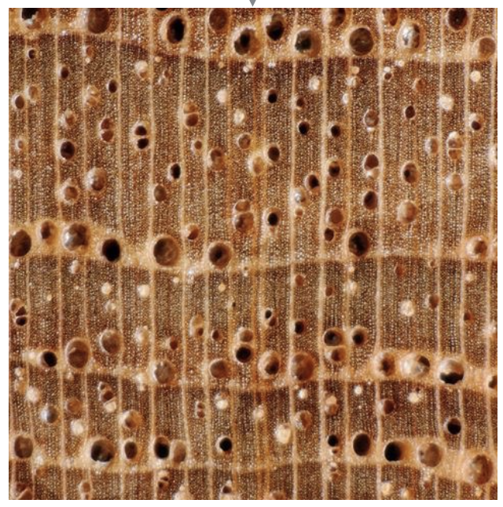
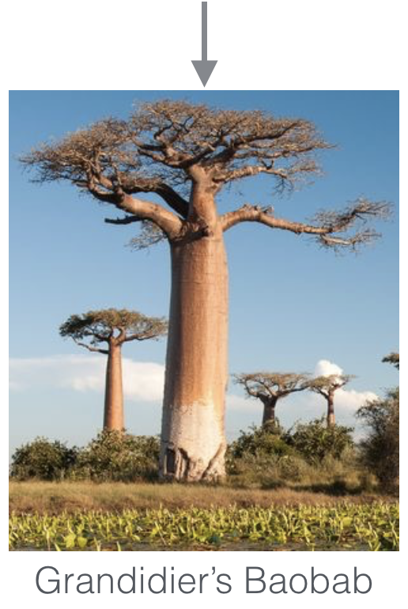

Research estimates that approximately 15 billion trees are cut down every year. Some of this wood is produced sustainably, but other is copped illegaly from endangered species and protected forests. One way to mitigate illegal deforestation is to avoid trading illegal wood. The challenge is to know which wood comes from which tree. A few specialized forensic botanists are capable of making these distinctions by looking at fine details in wood texture:
|  | ||
|---|---|---|
|  |
Of course, we cannot expect these handful of scientists to inspect 15 billion trees per year. Our research investigates computer vision and machine learning techniques (such as feature extraction, support vector machines, and neural networks) to classify these trees automatically. The main challenge is the extremely uneven sampling across classes (for example, we have a lot of pine trees, but only a handful of Grandidieri baobabs), which severely complicates training.